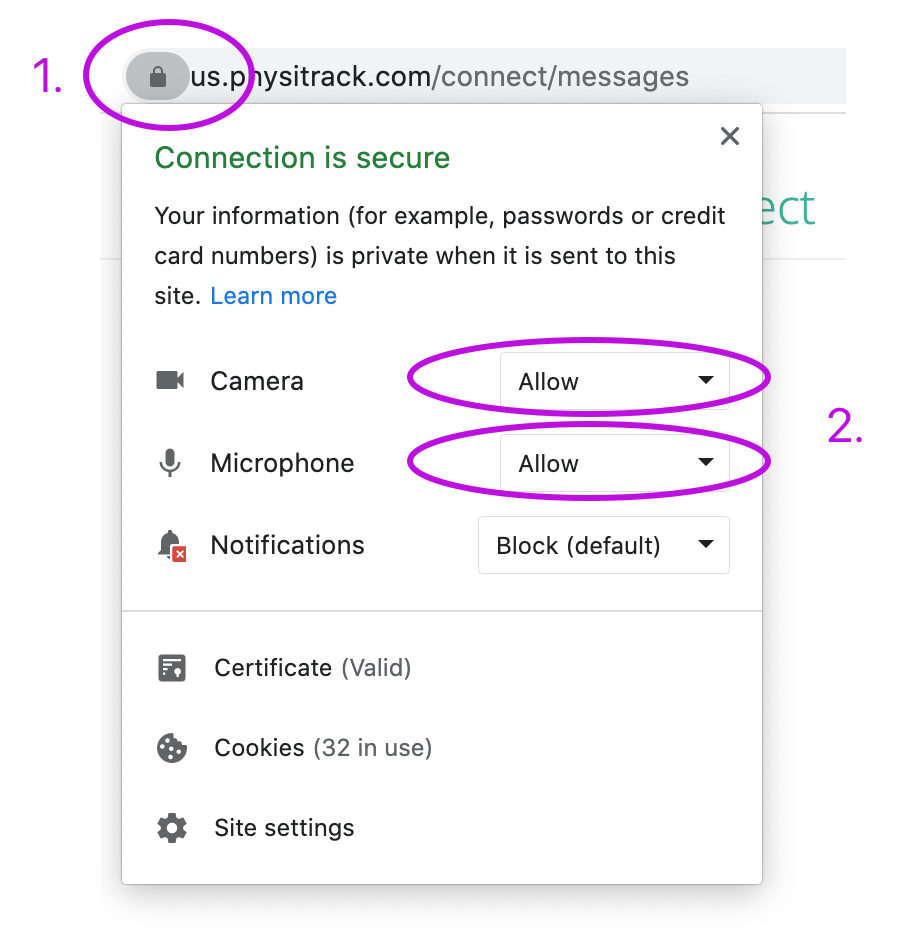

How WebRTC Is Used
WebRTC is used in a lot of apps that need real time communication. The most common example is video calling like when you join an online class or meeting. The browser will ask to use your camera and microphone and once you allow it the stream can be shared with the other person. Since the browser already supports these features everything connects quickly. This is why so many video chat tools depend on it.
Another way WebRTC is used is for sending data in real time. Apps that let you chat, send files or even play games inside the browser often use WebRTC's data channels. These connections are fast because they can go directly between users. That makes things like live typing, file sharing or game actions feel smooth. It helps create the kind of instant interaction people expect today.
WebRTC also supports screen sharing which is great for presentations, tutoring or tech support. When you choose a window or screen to share the browser captures it and sends it safely to the other person. Tools like Google Meet, Discord's browser calls, and many telehealth services use this feature. Because it handles so many different types of media WebRTC is useful for all kinds of web apps.
Example: Browser Asking for Microphone Access
When a website uses WebRTC to access your microphone, the browser will show a permission popup. The user can choose to allow or block the request. Here is a real example of what that microphone request looks like:

Example: Camera and Microphone Permissions in Browser Settings
Browsers also let users manually change camera and microphone permissions. This is helpful if the user blocked it by accident or wants to adjust their settings. Here is an example showing both camera and microphone permission controls in the site settings panel:
